Tidy Tuesday
###Since the data was a bit limited, I mainly explore time trends and distributions of what type of papers were being written most. I also look at which authors were most prolific and what categories they were publishing. My comments should guide you step-by-step through my thought process.
##Loading and Checking Data
#packages
library(tidyverse)
library(ggplot2)
library(readr)
library(here)
# Get the Data
papers <- readr::read_csv('https://raw.githubusercontent.com/rfordatascience/tidytuesday/master/data/2021/2021-09-28/papers.csv')## Rows: 29434 Columns: 4## ── Column specification ────────────────────────────────────────────────────────
## Delimiter: ","
## chr (2): paper, title
## dbl (2): year, month##
## ℹ Use `spec()` to retrieve the full column specification for this data.
## ℹ Specify the column types or set `show_col_types = FALSE` to quiet this message.authors <- readr::read_csv('https://raw.githubusercontent.com/rfordatascience/tidytuesday/master/data/2021/2021-09-28/authors.csv')## Rows: 15437 Columns: 4## ── Column specification ────────────────────────────────────────────────────────
## Delimiter: ","
## chr (4): author, name, user_nber, user_repec##
## ℹ Use `spec()` to retrieve the full column specification for this data.
## ℹ Specify the column types or set `show_col_types = FALSE` to quiet this message.programs <- readr::read_csv('https://raw.githubusercontent.com/rfordatascience/tidytuesday/master/data/2021/2021-09-28/programs.csv')## Rows: 21 Columns: 3## ── Column specification ────────────────────────────────────────────────────────
## Delimiter: ","
## chr (3): program, program_desc, program_category##
## ℹ Use `spec()` to retrieve the full column specification for this data.
## ℹ Specify the column types or set `show_col_types = FALSE` to quiet this message.paper_authors <- readr::read_csv('https://raw.githubusercontent.com/rfordatascience/tidytuesday/master/data/2021/2021-09-28/paper_authors.csv')## Rows: 67090 Columns: 2## ── Column specification ────────────────────────────────────────────────────────
## Delimiter: ","
## chr (2): paper, author##
## ℹ Use `spec()` to retrieve the full column specification for this data.
## ℹ Specify the column types or set `show_col_types = FALSE` to quiet this message.paper_programs <- readr::read_csv('https://raw.githubusercontent.com/rfordatascience/tidytuesday/master/data/2021/2021-09-28/paper_programs.csv')## Rows: 53996 Columns: 2## ── Column specification ────────────────────────────────────────────────────────
## Delimiter: ","
## chr (2): paper, program##
## ℹ Use `spec()` to retrieve the full column specification for this data.
## ℹ Specify the column types or set `show_col_types = FALSE` to quiet this message.## Rows: 29,434
## Columns: 4
## $ paper <chr> "w0001", "w0002", "w0003", "w0004", "w0005", "w0006", "w0007", "…
## $ year <dbl> 1973, 1973, 1973, 1973, 1973, 1973, 1973, 1973, 1973, 1973, 1973…
## $ month <dbl> 6, 6, 6, 7, 7, 7, 8, 9, 9, 9, 9, 10, 10, 10, 10, 11, 11, 11, 12,…
## $ title <chr> "Education, Information, and Efficiency", "Hospital Utilization:…## Rows: 15,437
## Columns: 4
## $ author <chr> "w0001.1", "w0002.1", "w0003.1", "w0004.1", "w0005.1", "w00…
## $ name <chr> "Finis Welch", "Barry R Chiswick", "Swarnjit S Arora", "Lee…
## $ user_nber <chr> "finis_welch", "barry_chiswick", "swarnjit_arora", NA, "jam…
## $ user_repec <chr> NA, "pch425", NA, "pli669", "psm28", NA, NA, NA, "pli259", …## Rows: 21
## Columns: 3
## $ program <chr> "AG", "AP", "CF", "CH", "DAE", "DEV", "ED", "EEE", "E…
## $ program_desc <chr> "Economics of Aging", "Asset Pricing", "Corporate Fin…
## $ program_category <chr> "Micro", "Finance", "Finance", "Micro", "Micro", "Mic…## Rows: 67,090
## Columns: 2
## $ paper <chr> "w0001", "w0002", "w0003", "w0004", "w0005", "w0006", "w0007", …
## $ author <chr> "w0001.1", "w0002.1", "w0003.1", "w0004.1", "w0005.1", "w0006.1…## Rows: 53,996
## Columns: 2
## $ paper <chr> "w0074", "w0087", "w0087", "w0107", "w0116", "w0117", "w0129",…
## $ program <chr> "EFG", "IFM", "ITI", "PE", "PE", "LS", "HE", "IFM", "ITI", "HE…#merging all together
joined <- left_join(papers, paper_authors) %>%
left_join(authors) %>%
left_join(paper_programs) %>%
left_join(programs)%>%
mutate(
catalogue_group = str_sub(paper, 1, 1),
catalogue_group = case_when(
catalogue_group == "h" ~ "Historical",
catalogue_group == "t" ~ "Technical",
catalogue_group == "w" ~ "General"
),
.after = paper
) ## Joining, by = "paper"## Joining, by = "author"## Joining, by = "paper"## Joining, by = "program"## Rows: 130,081
## Columns: 12
## $ paper <chr> "w0001", "w0002", "w0003", "w0004", "w0005", "w0006",…
## $ catalogue_group <chr> "General", "General", "General", "General", "General"…
## $ year <dbl> 1973, 1973, 1973, 1973, 1973, 1973, 1973, 1973, 1973,…
## $ month <dbl> 6, 6, 6, 7, 7, 7, 8, 9, 9, 9, 9, 9, 10, 10, 10, 10, 1…
## $ title <chr> "Education, Information, and Efficiency", "Hospital U…
## $ author <chr> "w0001.1", "w0002.1", "w0003.1", "w0004.1", "w0005.1"…
## $ name <chr> "Finis Welch", "Barry R Chiswick", "Swarnjit S Arora"…
## $ user_nber <chr> "finis_welch", "barry_chiswick", "swarnjit_arora", NA…
## $ user_repec <chr> NA, "pch425", NA, "pli669", "psm28", NA, NA, NA, "pli…
## $ program <chr> NA, NA, NA, NA, NA, NA, NA, NA, NA, NA, NA, NA, NA, N…
## $ program_desc <chr> NA, NA, NA, NA, NA, NA, NA, NA, NA, NA, NA, NA, NA, N…
## $ program_category <chr> NA, NA, NA, NA, NA, NA, NA, NA, NA, NA, NA, NA, NA, N…#saving data as a csv to folder
write.csv(joined,"/Users/nicholasmallis/Desktop/MADA_Fall_2021/NicholasMallis-MADA-portfolio/Data/tidy.csv", row.names = FALSE)
#let's see how big the dataset is?
nrow(joined)## [1] 130081####From the glimpse above, we see that there might be a lot missing for program, program_desc, and program category. Let’s look closer.
#We'll use prop.table to get the percentage of missing.
prop.table(table(joined$program, useNA = "always"))##
## AG AP CF CH DAE DEV
## 0.032572013 0.052305871 0.047301297 0.034609205 0.025906935 0.029589256
## ED EEE EFG HC HE IFM
## 0.033140889 0.023708305 0.100806421 0.035962208 0.051283431 0.065882027
## IO ITI LE LS ME PE
## 0.034532330 0.054773564 0.021471237 0.108271000 0.054742814 0.107371561
## POL PR TWP <NA>
## 0.027344501 0.046770858 0.007579893 0.004074384##
## Asset Pricing
## 0.052305871
## Children
## 0.034609205
## Corporate Finance
## 0.047301297
## Development Economics
## 0.029589256
## Development of the American Economy
## 0.025906935
## Economic Fluctuations and Growth
## 0.100806421
## Economics of Aging
## 0.032572013
## Economics of Education
## 0.033140889
## Environment and Energy Economics
## 0.023708305
## Health Care
## 0.035962208
## Health Economics
## 0.051283431
## Industrial Organization
## 0.034532330
## International Finance and Macroeconomics
## 0.065882027
## International Trade and Investment
## 0.054773564
## Labor Studies
## 0.108271000
## Law and Economics
## 0.021471237
## Monetary Economics
## 0.054742814
## Political Economics
## 0.027344501
## Productivity, Innovation, and Entrepreneurship
## 0.046770858
## Public Economics
## 0.107371561
## Technical Working Papers
## 0.007579893
## <NA>
## 0.004074384##
## Finance Macro/International Micro <NA>
## 0.09960717 0.27620483 0.61253373 0.01165428###It’s not too bad. The highest one was program category and it was only missing %1
#Let's go ahead and check the others too, but this time use sum(is.na)
#looks like nothing is missing here
sum(is.na(joined$catalogue_group))## [1] 0## [1] 0## [1] 0## # A tibble: 6 × 12
## paper catalogue_group year month title author name user_nber user_repec
## <chr> <chr> <dbl> <dbl> <chr> <chr> <chr> <chr> <chr>
## 1 w0001 General 1973 6 Educatio… w0001.1 Fini… finis_we… <NA>
## 2 w0002 General 1973 6 Hospital… w0002.1 Barr… barry_ch… pch425
## 3 w0003 General 1973 6 Error Co… w0003.1 Swar… swarnjit… <NA>
## 4 w0004 General 1973 7 Human Ca… w0004.1 Lee … <NA> pli669
## 5 w0005 General 1973 7 A Life C… w0005.1 Jame… james_sm… psm28
## 6 w0006 General 1973 7 A Review… w0006.1 Vict… victor_z… <NA>
## # … with 3 more variables: program <chr>, program_desc <chr>,
## # program_category <chr>## # A tibble: 6 × 12
## paper catalogue_group year month title author name user_nber user_repec
## <chr> <chr> <dbl> <dbl> <chr> <chr> <chr> <chr> <chr>
## 1 h0132 Historical 2001 1 A Wolfra… h0132.2 Leon… <NA> <NA>
## 2 h0133 Historical 2001 4 What Cau… h0090.1 John… john_wal… <NA>
## 3 h0134 Historical 2001 7 The Urba… h0002.1 Mich… michael_… pha740
## 4 h0135 Historical 2001 8 The Poor… h0071.1 Jose… joseph_f… <NA>
## 5 h0136 Historical 2001 11 The Prop… h0090.1 John… john_wal… <NA>
## 6 h0137 Historical 2001 12 Short-Te… h0137.1 Howa… howard_b… <NA>
## # … with 3 more variables: program <chr>, program_desc <chr>,
## # program_category <chr>###But how many specific papers? I’m interested in looking at categories of papers across time,but it appears that the data is laid out by author and not paper title.
#Here we table title and glimpse at the number of observations.
#Looks like there are 29,419 rows after this so there would be that many papers
tab <- as.data.frame(table(joined$title))
glimpse(tab)## Rows: 29,419
## Columns: 2
## $ Var1 <fct> ". . . and the Cross-Section of Expected Returns", "'3rd of tha M…
## $ Freq <int> 3, 3, 6, 6, 4, 3, 2, 1, 2, 2, 1, 4, 3, 1, 4, 6, 2, 2, 8, 2, 2, 4,…##
## Attaching package: 'data.table'## The following object is masked from 'package:rlang':
##
## :=## The following objects are masked from 'package:dplyr':
##
## between, first, last## The following object is masked from 'package:purrr':
##
## transposeDT <- data.table(joined, key="title")
DT <- DT[, n := rank(paper, ties.method="first"), by = key(DT)][n == 1]
joined_df <- DT[order(DT$title),]
#Making the new data frame results in a new one with 29,419 observations which matches our table from before
glimpse(joined_df)## Rows: 29,419
## Columns: 13
## $ paper <chr> "w9793", "w11607", "w25732", "w5755", "w17327", "w133…
## $ catalogue_group <chr> "General", "General", "General", "General", "General"…
## $ year <dbl> 2003, 2005, 2019, 1996, 2011, 2007, 2008, 2009, 1981,…
## $ month <dbl> 6, 9, 4, 9, 8, 9, 12, 12, 11, 4, 4, 8, 8, 4, 7, 12, 3…
## $ title <chr> "\". . . and six hundred thousand men were dead.\"", …
## $ author <chr> "w0424.1", "w5882.1", "w13674.2", "w1803.2", "w0519.1…
## $ name <chr> "Herschel I Grossman", "Helene Rey", "Giovanni L Viol…
## $ user_nber <chr> "herschel_grossman", "helene_rey", "giovanni_violante…
## $ user_repec <chr> NA, "pre8", "pvi7", "phi111", "pha78", "pbl79", "pst8…
## $ program <chr> "EFG", "IFM", "EFG", "PE", "LS", "ED", "ITI", "POL", …
## $ program_desc <chr> "Economic Fluctuations and Growth", "International Fi…
## $ program_category <chr> "Macro/International", "Macro/International", "Macro/…
## $ n <int> 1, 1, 1, 1, 1, 1, 1, 1, 1, 1, 1, 1, 1, 1, 1, 1, 1, 1,…#checking. looks good. Note: I commented out the following because the output was so large...
#table(joined_df$title)###Some Data Exploration/Plotting
#a simple bar plot of program_category
ggplot(joined_df, aes(x=program_category)) +
geom_bar(fill = "#0073C2FF") + labs(title= "Counts of NBER Papers by Program Category , 1973-2021") + xlab("Program Category") + ylab("Count") 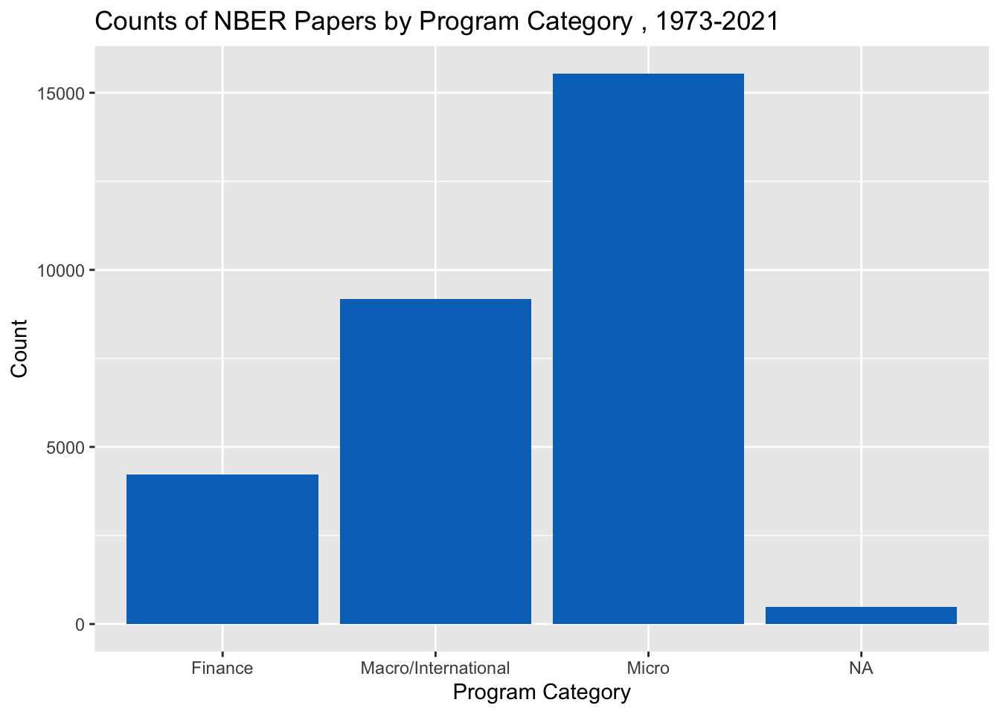
#now again without the NAs
complete <- joined_df[complete.cases(joined_df), ]
ggplot(complete, aes(x=program_category)) +
geom_bar(fill = "#0073C2FF") + labs(title= "Counts of NBER Papers by Program Category , 1973-2021") + xlab("Program Category") + ylab("Count") 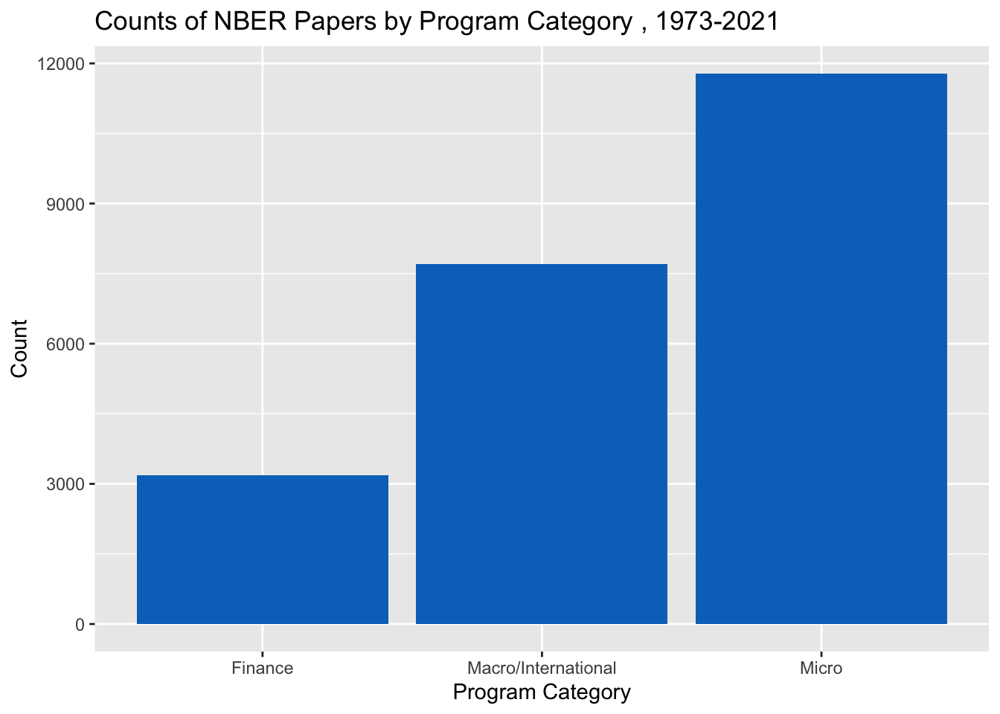
#A simple plot of program
ggplot(joined_df, aes(x=program)) +
geom_bar(fill = "red") + labs(title= "Counts of NBER Papers by Specific Program, 1973-2021") + xlab("Program Abbreviation") + ylab("Count") 
#now again without the NAs
ggplot(complete, aes(x=program)) +
geom_bar(fill = "red") + labs(title= "Counts of NBER Papers by Specific Program, 1973-2021") + xlab("Program Abbreviation") + ylab("Count") 
##
## Asset Pricing
## 2636
## Children
## 1593
## Corporate Finance
## 1588
## Development Economics
## 933
## Development of the American Economy
## 1454
## Economic Fluctuations and Growth
## 4213
## Economics of Aging
## 1645
## Economics of Education
## 735
## Environment and Energy Economics
## 998
## Health Care
## 973
## Health Economics
## 819
## Industrial Organization
## 904
## International Finance and Macroeconomics
## 2676
## International Trade and Investment
## 1390
## Labor Studies
## 2413
## Law and Economics
## 440
## Monetary Economics
## 890
## Political Economics
## 264
## Productivity, Innovation, and Entrepreneurship
## 725
## Public Economics
## 1648
## Technical Working Papers
## 144###It looks like Labor Studies, Political Economics, and Economic Fluctuations and Growth were most common.
#let's look at year, but first some data management
joined_df$year2 <- lubridate::ymd(joined_df$year, truncated = 2L)
#Now plotting the new year variable
#Here we see a sharp increase between year 2000 and now.
#And and even sharper increase from 2019 to 2021
ggplot(joined_df, aes(x=year2)) +
geom_bar(fill = "#0073C2FF") + labs(title= "Counts of NBER Papers by Year, 1973-2021") + xlab("Year") + ylab("Count") 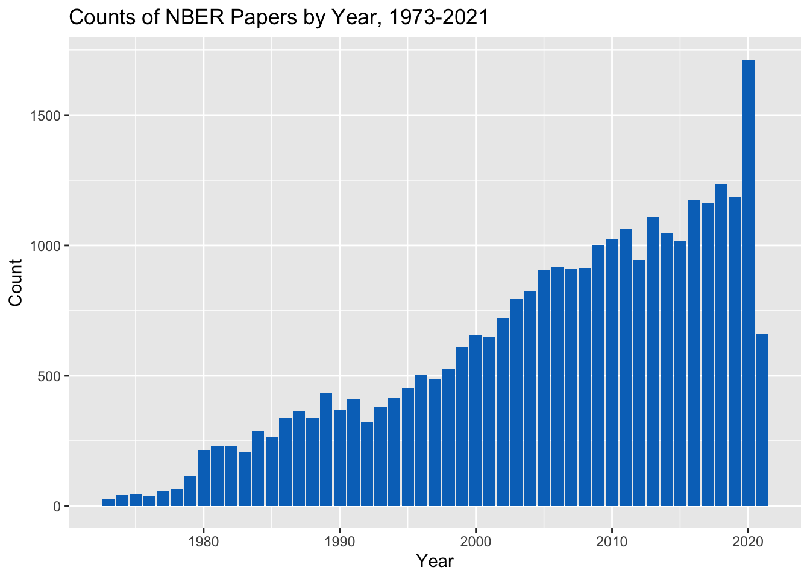
###Now we can look at this over time by program category. It seems that Micro papers have made up most of the papers being written since the mid 90’s and contribute most to the steep increase in papers.
ggplot(joined_df, aes(x=year2, fill=program_category)) + geom_bar() +
labs(title= "Counts of NBER Papers by Year and Program Category, 1973-2021") + xlab("Year") + ylab("Count") 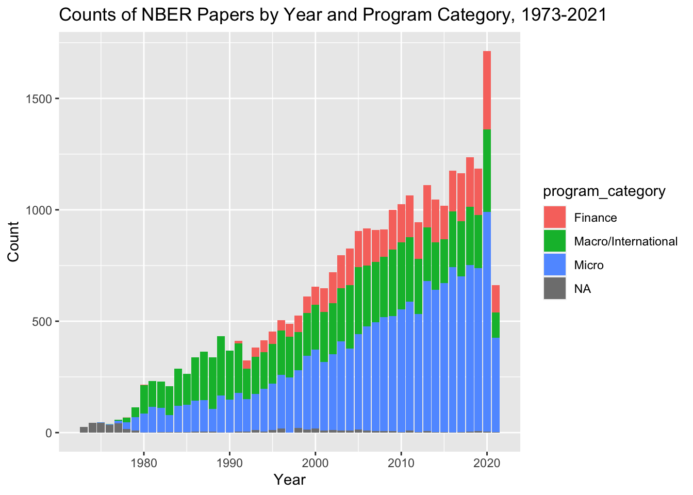
#Same thing here, but now I omit the missing.
complete$year2 <- lubridate::ymd(complete$year, truncated = 2L)
ggplot(complete, aes(x=year2, fill=program_category)) + geom_bar() +
labs(title= "Counts of NBER Papers by Year and Program Category, 1973-2021") + xlab("Year") + ylab("Count") 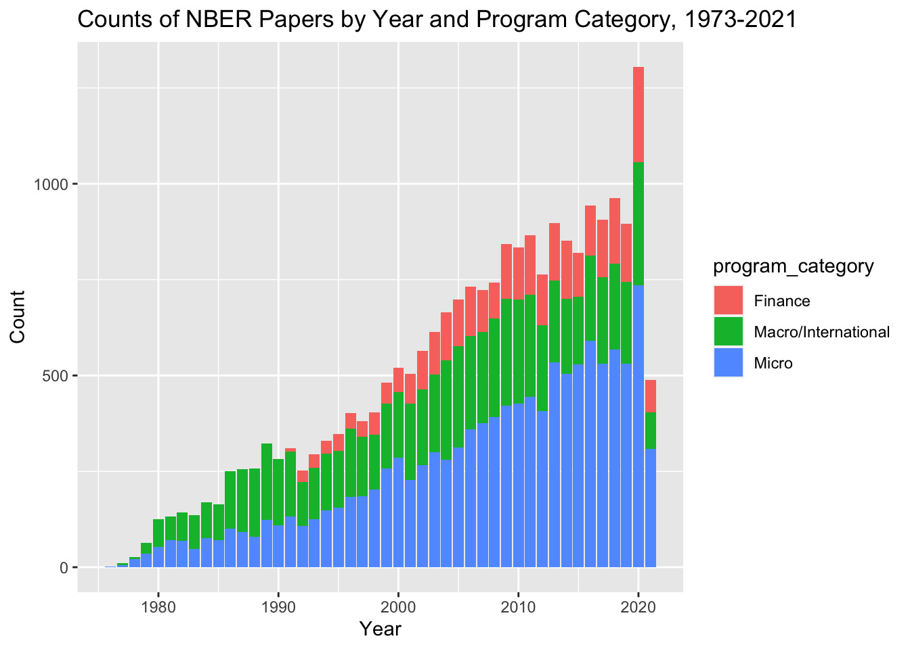
#I might be reaching here, but let's look at what month is most common for paper.
#Nothing to interesting
ggplot(joined_df, aes(x=month, fill=program_category)) + geom_bar() 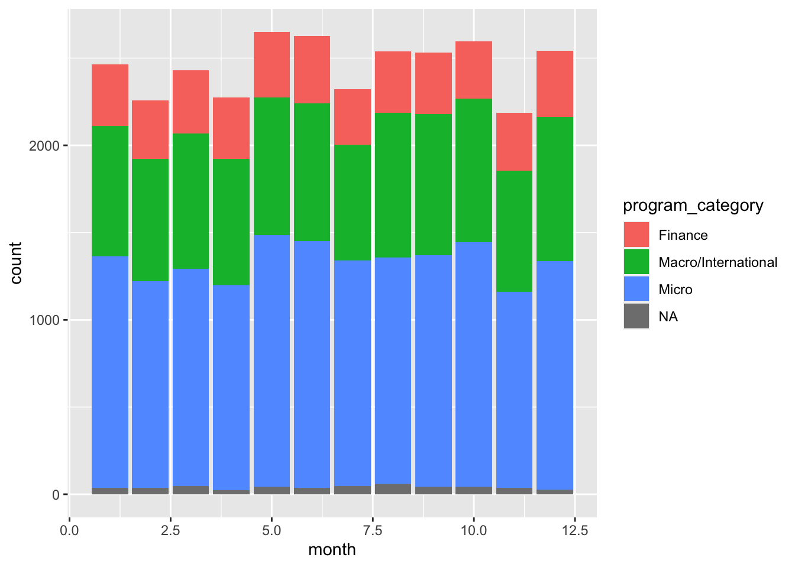
#Now let's look at each specific program by year
ggplot(joined_df, aes(x=year2, fill=program)) + geom_bar() + labs(title= "Counts of NBER Papers by Year and Specific Program, 1973-2021") + xlab("Year") + ylab("Count") 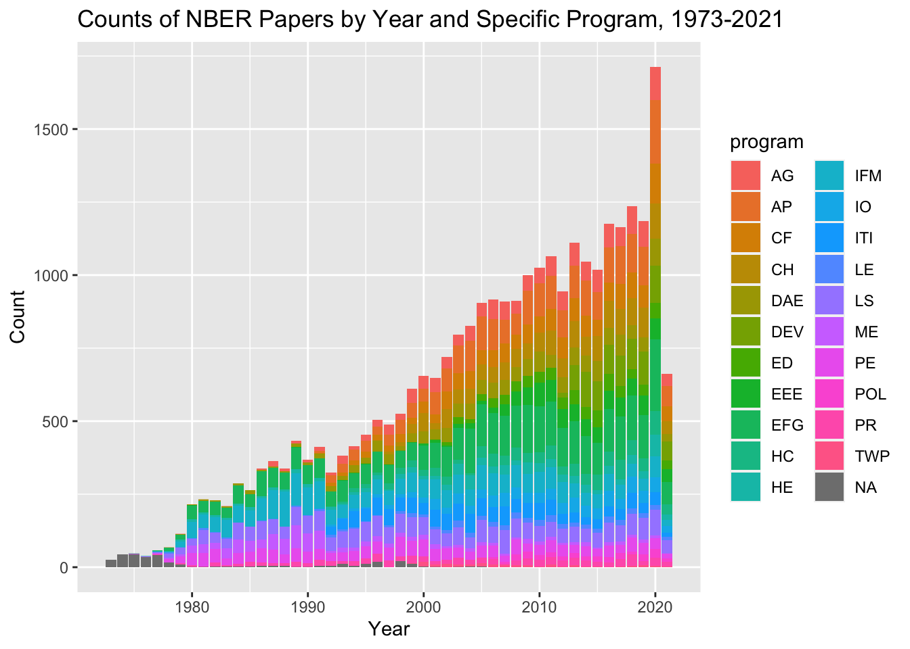
###Sort of difficult to see with so many categories. I am particularly interested in how the quantity of healthcare related papers has changed over time. Here I will make a new variable called ‘health’ that groups all the the health related papers together
##
## Asset Pricing
## 2636
## Children
## 1593
## Corporate Finance
## 1588
## Development Economics
## 933
## Development of the American Economy
## 1454
## Economic Fluctuations and Growth
## 4213
## Economics of Aging
## 1645
## Economics of Education
## 735
## Environment and Energy Economics
## 998
## Health Care
## 973
## Health Economics
## 819
## Industrial Organization
## 904
## International Finance and Macroeconomics
## 2676
## International Trade and Investment
## 1390
## Labor Studies
## 2413
## Law and Economics
## 440
## Monetary Economics
## 890
## Political Economics
## 264
## Productivity, Innovation, and Entrepreneurship
## 725
## Public Economics
## 1648
## Technical Working Papers
## 144#new categories
joined_df$health <- "Non-Health Related"
joined_df$health[ is.na(joined_df$program_desc)] <- NA
joined_df$health[joined_df$program_desc=="Health Care" | joined_df$program_desc=="Health Economics"] <- "Health Related"
#Checking. Looks good
table(joined_df$health, useNA = "always")##
## Health Related Non-Health Related <NA>
## 1792 27289 338#First plotting without time
ggplot(joined_df, aes(x=health)) +
geom_bar(fill = "#0073C2FF") + labs(title= "Counts of NBER Papers by Health Related Topics, 1973-2021") + xlab("Program") + ylab("Count") 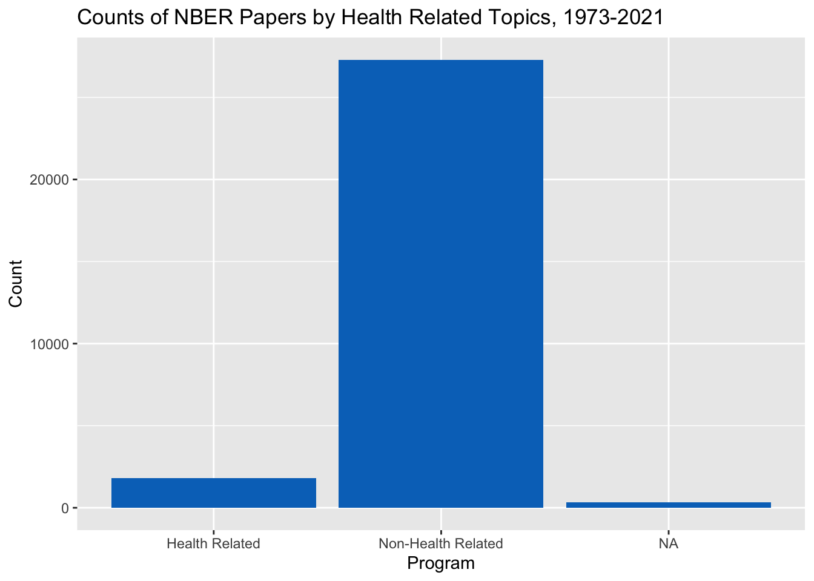
#Now plotting health accross time.
#It looks like there a lot more health papers in 2020
#which makes sense of course. But there were a lot more papers in
#general in 2020
ggplot(joined_df, aes(x=year2, fill=health)) + geom_bar() +
labs(title= "Counts of NBER Papers by Health Related Topics by Year, 1973-2021") + xlab("Year") + ylab("Count") 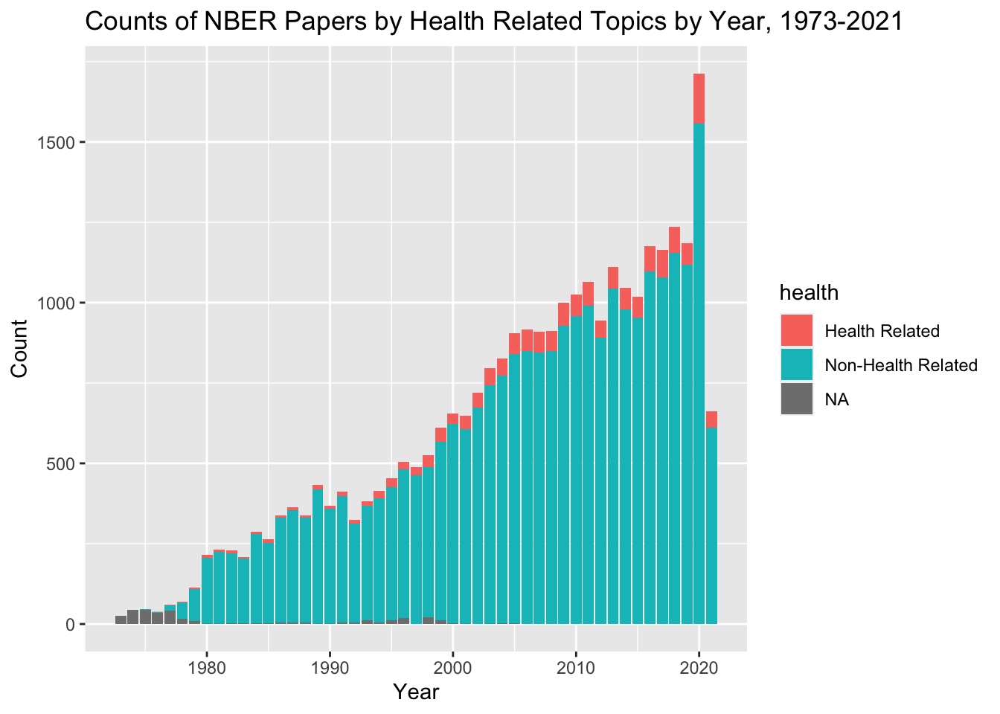
#Last, I'd like to see which author has written the most papers
#First we'll table all names and create a new data frame.
#But we have to use our original dataset before we set it to one paper an observation
totals <- as.data.frame(table(joined$name))
glimpse(totals)## Rows: 15,398
## Columns: 2
## $ Var1 <fct> A Abigail Payne, A Bowen Garrett, A Burak Guner, A Colin Cameron,…
## $ Freq <int> 9, 4, 2, 3, 63, 10, 1, 3, 4, 2, 1, 8, 19, 4, 37, 1, 2, 2, 1, 1, 5…#Then we'll sort this new data frame by frequency
totals <- totals[order(-totals$Freq),]
#And look at the totals. It looks like
#Jonathan Gruber had the most papers
#next to James J Heckman
#But let's make this a nice table
mostpapers <- as.tibble(head(totals, n=10L))## Warning: `as.tibble()` was deprecated in tibble 2.0.0.
## Please use `as_tibble()` instead.
## The signature and semantics have changed, see `?as_tibble`.
## This warning is displayed once every 8 hours.
## Call `lifecycle::last_lifecycle_warnings()` to see where this warning was generated.## # A tibble: 10 × 2
## Name Number_of_Papers
## <fct> <int>
## 1 Jonathan Gruber 359
## 2 James J Heckman 331
## 3 Daron Acemoglu 308
## 4 Janet M Currie 306
## 5 Michael D Bordo 297
## 6 Edward L Glaeser 291
## 7 Joshua Aizenman 284
## 8 Martin S Feldstein 272
## 9 Andrei Shleifer 242
## 10 Alan M Taylor 239#Based on what we saw before, I assume that he will have written
#papers about Labor Studies, Political Economics, and Economic Fluctuations and Growth
#in the last 30 years, but I could be wrong.
#Let's subset the data to only look at Jonathn Gruber's papers
gruber <- joined[which(joined$name=='Jonathan Gruber'), ]
gruber$year2 <- lubridate::ymd(gruber$year, truncated = 2L)
#Now we'll recreate some of the other plots with only grubers information
#Based on this plot, it looks like John Gruber was most prolific in year 2000 and
#year 2020
ggplot(gruber, aes(x=year2)) + geom_bar() + labs(title= "John Gruber's Paper Counts by Year, 1990-2021") + xlab("Year") + ylab("Count") 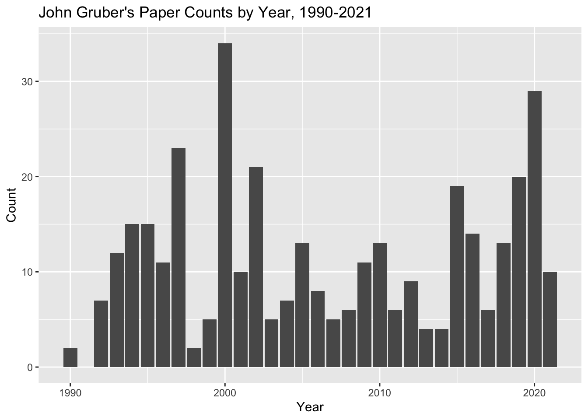
#Examining the most common topics he researches
#Looks like he is most interested in Public Economics.
#I guess I was wrong!
ggplot(gruber, aes(x=program)) + geom_bar() + labs(title= "John Gruber's Papers, 1990-2021") + xlab("Year") + ylab("Count") 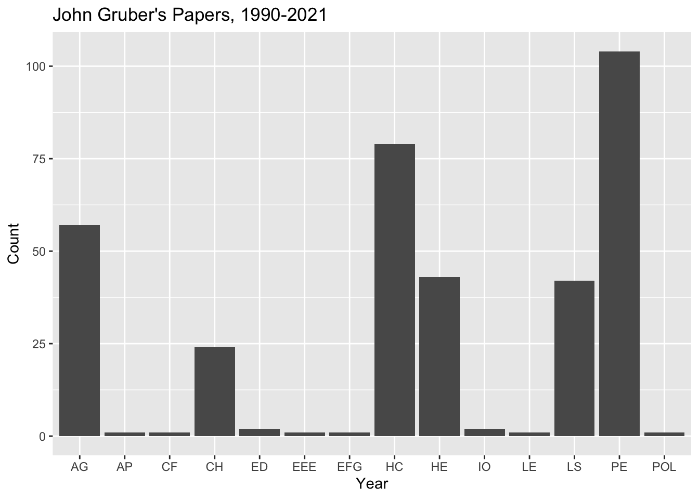
#Let's see what he wrote about most in 2020.
#First one more subset
gruber_2020 <- gruber[which(gruber$year2=='2020-01-01'), ]
#Now plotting and again. Looks like Healthcare and Health Econ were the highest
ggplot(gruber_2020, aes(x=program)) + geom_bar() + labs(title= "John Gruber's Paper Topics in 2020") + xlab("Topics") + ylab("Count") 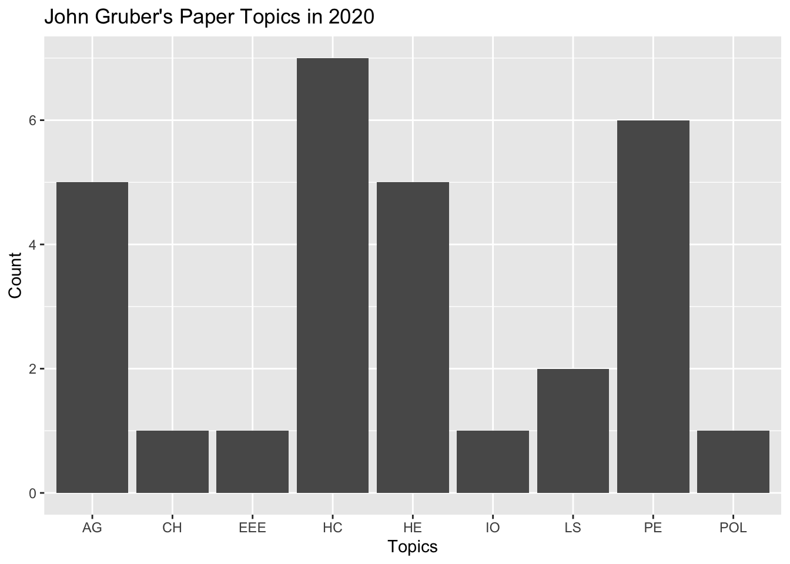
##
## AG CH EEE HC HE IO LS PE POL
## 5 1 1 7 5 1 2 6 1